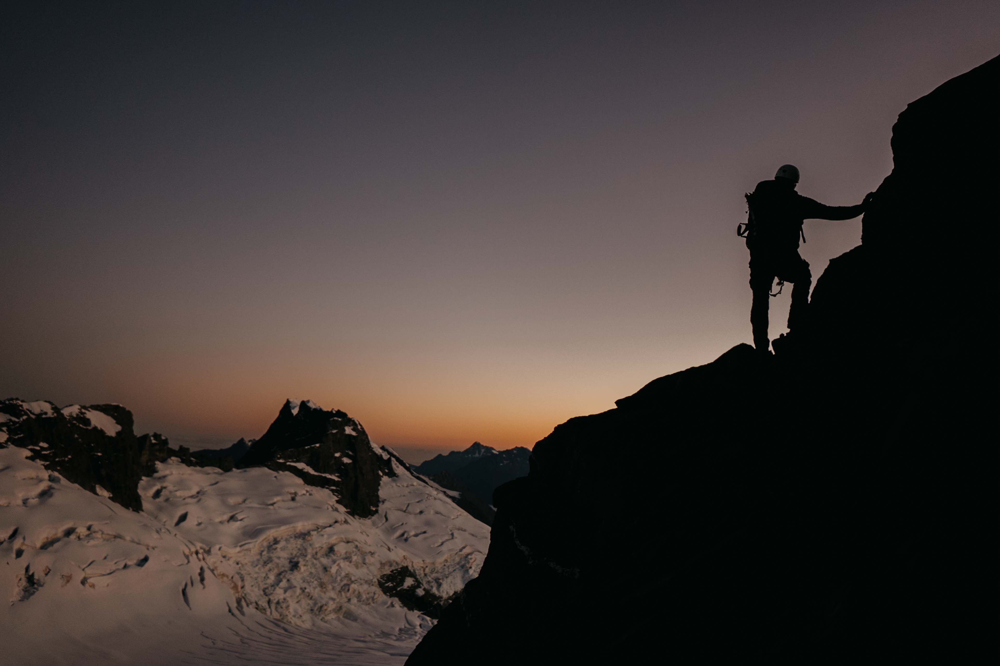

"It's not the mountain we conquer, but ourselves."
Mountaineering began as an extension of scientific exploration in Europe. In 1786, Jacques Balmat and Michel-Gabriel Paccard made the first ascent of Mont Blanc, marking the start of modern mountaineering.
This period was driven by curiosity and a desire to study the natural world, especially in the Alps. Early climbers faced harsh conditions with minimal gear, relying on wool clothing, hemp ropes, and iron crampons.
Their focus was often on reaching unexplored summits to advance scientific knowledge and national pride.
Mountaineering became popular among the British aristocracy and the elite. Pioneers like Edward Whymper, who made the first ascent of the Matterhorn in 1865, and John Tyndall were instrumental figures.
This era saw the first ascents of many of the major Alpine peaks, including the Eiger and the Jungfrau.
Techniques improved slightly, with climbers using ice axes, early pitons, and improved rope, yet it remained a dangerous and physically demanding pursuit.
With most Alpine peaks conquered, climbers turned their attention to higher mountains in the Andes, Himalayas, and other ranges.
This era included major accomplishments, like the first ascent of Mount Everest by Sir Edmund Hillary and Tenzing Norgay in 1953. The mid-20th century brought technical advancements, including nylon ropes, specialized boots, and more refined ice-climbing tools.
Mountaineering became increasingly technical, with climbers pushing the limits on both altitude and difficulty.
A new ethical approach emerged, with a focus on minimal environmental impact and “alpine style” climbing—ascending with minimal gear, without supplemental oxygen, and often without support teams.
In modern mountaineering, specialized disciplines like ice climbing, mixed climbing, and bouldering have grown, and climbers often seek out new, more challenging routes on iconic peaks rather than simply reaching the summit.